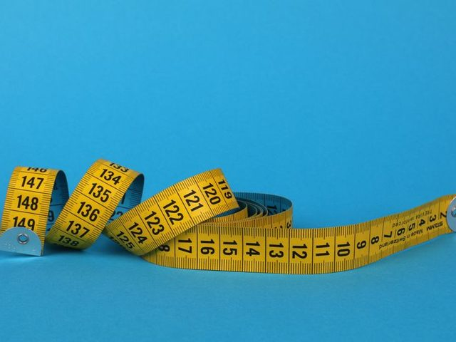
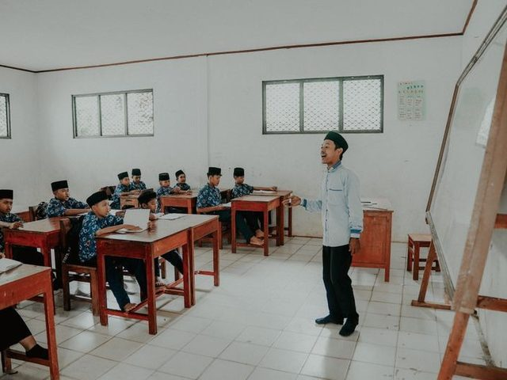
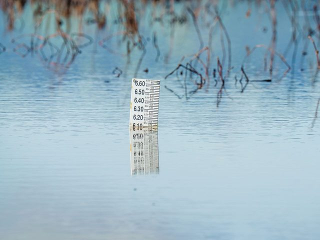

UNIT 27 · VOCABULARY
L 開頭（一）
L-I
37 個單字聽・唸・用
本單元單字一覽
WORD UP「L-I」的 37 個字（lack 到 library）。紅色＝要複習，藍色標籤＝WORD UP 標熟記、還要在這裡考對。
lackladylakelamblamplandlanguagelargelastlatelaterlatestlaughlawlawyerlaylazyleadleaderleadershipleaflearnleastleaveleftleglegallemonlendlengthlesslessonletletterlettucelevellibrary
每個字都有 🔊，先聽發音、跟著唸，再看例句。
單字 1–4
🪫
lack
缺乏n./v.
Lack of sleep makes me tired.
睡眠不足讓我很累。
睡眠不足讓我很累。

lady
女士；淑女n.
Ladies and gentlemen, welcome!
各位女士先生，歡迎！
各位女士先生，歡迎！

lake
湖n.
We rode bikes around Sun Moon Lake.
我們騎腳踏車環日月潭。
我們騎腳踏車環日月潭。

lamb
小羊；羊肉n.
The lamb is following its mother.
小羊跟著媽媽走。
小羊跟著媽媽走。
單字 5–8
lamp
燈；檯燈n.
Turn on the lamp. It's dark.
打開檯燈，好暗。
打開檯燈，好暗。
land
陸地；土地；降落n./v.
The plane landed safely.
飛機安全降落。
飛機安全降落。
🗣️
language
語言n.
How many languages can you speak?
你會說幾種語言？
你會說幾種語言？

large
大的adj.
Can I have a large Coke?
我可以要一杯大可樂嗎？
我可以要一杯大可樂嗎？
單字 9–12

last
最後的；上一個；持續adj./v.
The meeting lasted two hours.
會議持續了兩小時。
會議持續了兩小時。

late
遲的；晚的adj./adv.
Don't be late for school.
上學不要遲到。
上學不要遲到。
⏭️
later
稍後；後來adv.
See you later!
待會見！
待會見！
🆕
latest
最新的adj.
Have you seen the latest phone?
你看過最新款的手機嗎？
你看過最新款的手機嗎？
單字 13–16

laugh
笑v./n.
Don't laugh at others.
不要嘲笑別人。
不要嘲笑別人。

law
法律n.
Everyone must obey the law.
每個人都必須守法。
每個人都必須守法。

lawyer
律師n.
My aunt is a lawyer.
我阿姨是律師。
我阿姨是律師。
🥚
lay
放；下（蛋）v.
The hen laid three eggs.
母雞下了三顆蛋。
母雞下了三顆蛋。
單字 17–20

lazy
懶惰的adj.
Don't be lazy. Get up!
別懶惰了，起床！
別懶惰了，起床！
🧭
lead
帶領；導致v.
Hard work leads to success.
努力帶來成功。
努力帶來成功。
🧑✈️
leader
領導者n.
Who is your class leader?
誰是你們班長？
誰是你們班長？
🏅
leadership
領導能力n.
She has great leadership.
她很有領導能力。
她很有領導能力。
單字 21–24
leaf
葉子n.
The leaves turn yellow in fall.
葉子秋天變黃。
葉子秋天變黃。

learn
學習v.
I'm learning to swim.
我正在學游泳。
我正在學游泳。
🔻
least
最少的adj./adv.
Drink at least eight glasses of water a day.
一天至少喝八杯水。
一天至少喝八杯水。

leave
離開；留下v.
The train leaves at nine.
火車九點開。
火車九點開。
單字 25–28
⬅️
left
左邊的；左邊adj./n.
Turn left at the corner.
在轉角左轉。
在轉角左轉。

leg
腿n.
A spider has eight legs.
蜘蛛有八隻腳。
蜘蛛有八隻腳。
📜
legal
合法的adj.
Is it legal to park here?
在這裡停車合法嗎？
在這裡停車合法嗎？

lemon
檸檬n.
I like tea with lemon.
我喜歡加檸檬的茶。
我喜歡加檸檬的茶。
單字 29–32

lend
借（出）v.
Can you lend me your pen?
你可以借我你的筆嗎？
你可以借我你的筆嗎？

length
長度n.
What is the length of this room?
這個房間的長度是多少？
這個房間的長度是多少？
➖
less
較少的adj./adv.
Eat less sugar.
少吃糖。
少吃糖。

lesson
課；教訓n.
I have piano lessons on Fridays.
我星期五上鋼琴課。
我星期五上鋼琴課。
單字 33–36
🙌
let
讓v.
Let me help you.
讓我幫你。
讓我幫你。

letter
信；字母n.
I wrote a letter to my grandma.
我寫了一封信給奶奶。
我寫了一封信給奶奶。

lettuce
萵苣；生菜n.
Put some lettuce in the sandwich.
在三明治裡放些生菜。
在三明治裡放些生菜。

level
程度；等級n.
This book is at my reading level.
這本書符合我的閱讀程度。
這本書符合我的閱讀程度。
單字 37–37

library
圖書館n.
I borrow books from the library.
我從圖書館借書。
我從圖書館借書。
重點整理
| 說法 | 中文 | 例子 |
|---|---|---|
| lend / borrow | 借出 ／ 借入 | lend me a pen ／ borrow a pen from you |
| let + 人 + 原形動詞 | 讓某人… | Let me go. |
| laugh at | 嘲笑 | laugh at his mistake |
| at least | 至少 | at least ten minutes |
| be late for | …遲到 | late for class |
| lead to | 導致 | lead to problems |
| leaf → leaves | 葉子的複數 | green leaves |
leave 的過去式 left；lay（放、下蛋）的過去式 laid。
快問快答：中文 → 英文
1缺乏lack
2湖lake
3燈；檯燈lamp
4語言language
5最後的；上一個；持續last
6稍後；後來later
7笑laugh
8律師lawyer
快問快答：英文 → 中文
1lazy懶惰的
2leader領導者
3leaf葉子
4least最少的
5left左邊的；左邊
6legal合法的
7lend借（出）
8less較少的
學完了！接下來
複習方法
review
- 回到「📗 單字卡」，按「遮中文」自己考自己
- 再按「遮英文」，看中文說出英文
- 每個例句跟著 🔊 唸一次
準備好了
- 按右上角「📝 前往測驗」
- 測驗錯的題目要訂正到全對
- 訂正完成補送 1 點